| |
|
DOLGU GEOMETRİSİ
|
Dolgu şevlerinin geometrisi, yarmada yapıldığına çok benzer bir şekilde, parametrik veya vektörel olarak tanımlanabilir. Aynı şekilde, 2D ve 3D çizgileri, duvarları vb. birleştiren bir dizi gelişmiş mod aracılığıyla da tanımlanabilir. Bu diyalog kutusunda, diyalog kutusunu genişletmeye veya daraltmaya (Uzun/kısa menü) olanak tanıyan bir  simgesi bulunmaktadır. simgesi bulunmaktadır.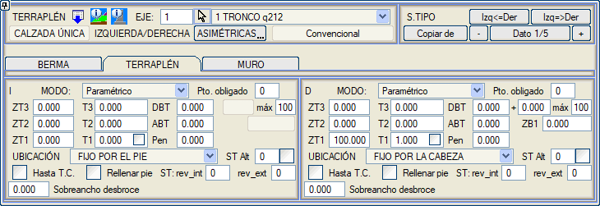
Parametrik Tanım
Vektörel Tanım Dolgu kesiti uygulama modları Alternatif Tip Kesit Dolgu kaplaması Zorunlu nokta Gelişmiş Tanımlar Parametrik Tanım 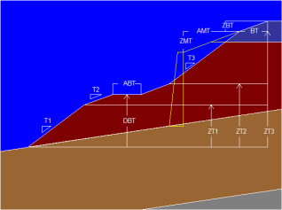İlgili şevlerin uygulandığı aşamalar için ardışık yükseklikler girilir. Şev tanımı aşağıdaki parametrelerle yapılır:
Eğer hesaplamada, toprak yarma kesiti yüksekliği ZT1, ZT2 veya ZT3'ün en büyüğünü aşmazsa, şevler yerine, program palyeden sonra dikey bir şev (veya tanımlanmışsa bir duvar) yerleştirir; bu şevin tepesi platformdan yatay bir DGY mesafesinde ve bir YDY kot farkıyla olacaktır. Bu nedenle, tanımlanan en yüksek şeve, araziyle kesişecek kadar yeterli bir yükseklik atanması gerekir, bu yüzden genellikle 100 veya 1000 değeri atanır. Şevin Y:D (dikeyde bir birimlik bir yükselme elde etmek için yataydaki doğrusal birimler) ilişkisine göre verildiğini hatırlatmak gerekir, öyle ki 0 şevi tamamen dikey olur ve sayı arttıkça şev daha yatık hale gelir. Eğer sadece bir şev kullanılacaksa, bu şev ZT1, D1 verilerinde yer almalıdır; eğer iki şev kullanılacaksa, ZT1, D1 ve ZT2, D2 olmalıdır ve üç şev durumunda da benzer şekilde. Kullanılmayan veriler sıfır olarak bırakılabilir. Vektörel Tanım 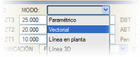Parametrik tanım yerine, burada dolgu kesitlerinin vektörlerle tanımı (sayısal veya grafiksel olarak) yapılabilir. Bir vektörle tanımlandığında, eğer uygulanırken platforma ulaşılmazsa, vektör yerine dikey bir şev (veya tanımlanmışsa bir duvar) yerleştirilir, bu nedenle, genel olarak, bu vektörün tanımı her zaman araziye ulaşacak kadar büyük olmalıdır.
Vektörel tanımın üçüncü sütunu, vektörün her bir köşe noktasıyla ilişkili kodlara karşılık gelir. Dolgu kesiti uygulama modları Dolgu kesitini belirli bir enkesite uygularken, nasıl tanımlandığına bakılmaksızın, ISTRAM®/ISPOL® birkaç farklı şekilde hareket edebilir:
Her iki durumda da, eğer çokgenin yüksekliği gereken dolguyu karşılamak için yetersizse, onun yerine AMT mesafesinde dikey bir duvar ve tepesinde ZMT kot farkı ile yerleştirilir.
Bu seçenek, banket veya palye kenarının arazinin üzerinde (dolgu) ve terasman drenajının arazinin altında (yarma) olduğu durumlarda da uygulanır. Ayrıca, bu noktadan itibaren tek bir şevle ve hendeksiz olarak araziye çıkılır.
Yarma durumundaki alternatif tip kesite benzer şekilde, tip kesitte öngörülen dolgu yüksekliği için araziye ulaşılmazsa, dikey şev veya duvar yerleştirilmeden önce alternatif tip kesitin dolgusu denenir. Dolgu kaplaması Dolgunun iç veya dış kaplamasının bulunduğu kesimlerde hangi tip kesitlerin kullanılacağını belirtmek için iki tip kesit (iç_kap ve dış_kap kutucuklarında) belirtilebilir. Zorunlu nokta Parametrik veya vektörel dolgular için bir zorunlu nokta tanımlanabilir. Eğer dolgu şev dibinden sabitse, aşağıdan sayılır ve eğer şev tacından sabitse, yukarıdan sayılır. Gelişmiş Tanımlar Parametrik ve vektörel modların yanı sıra, ISTRAM®/ISPOL®, her zaman kullanıcının veri giriş sürelerini azaltmaya odaklanmış, çok güçlü bir dolgu geometrisi tanım modları bataryası sunar. 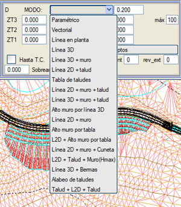
MOD açılır menüsüne tıklandığında, farklı tanım olanaklarını içeren bir yardım grafiği (model) ekranda açılır. Herhangi bir EDM çizgisinin kullanıldığı durumlarda, çizgiyi seçmek için [ÇİZGİ 0 nkt] düğmesine tıklanır ve ardından harita üzerinden çizgi seçilir. Seçilen çizgi ekranda daha kalın ve camgöbeği renginde gösterilir ve ayrıca menüde çizginin nokta sayısı görünür. [Dök] seçeneği ayrıca, .vol dosyasında saklanan çizgiden bir EDM çizgisi oluşturmaya olanak tanır, bu da geldiği EDM dosyasını yüklemeye gerek kalmadan çizgiyi düzenlemeyi mümkün kılar. Yataydaki çizgi 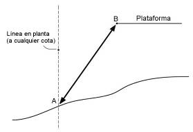Haritadan verilen bir çizgiden yola çıkarak, program aynı çizgiden geçen düşeyin araziyle kesişimini hesaplar ve bu kesişim noktası A'yı platform kenarı B ile birleştirir. 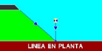
3D Çizgi, zemine ulaşmak istenmiyorsa çizginin kotunda bitirmeye olanak tanır. (Eylül 2020'den önceki sürümlerde, bu modlar çizgi noktalarının kotunu .vol dosyasına kaydetmiyordu ve 0 kotuyla yükleniyordu.) 3D Çizgi 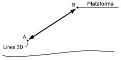Verilen bir 3D çizgiyle, platform kenarı B, A çizgisiyle birleştirilir ve sonuçtaki şev o noktada kesilir. Kesitin yarma mı yoksa dolgu bölgesinde mi olduğuna bakılmaksızın, son nokta, eğer şev alçalıyorsa (ve hendek yoksa) 601 ve yükseliyorsa 1399 olarak kodlanır. 3D Çizgi + Duvar 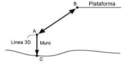Örneğin, bir duvarın tepesini temsil eden 3D çizginin olduğu durumu ele alır. Bu çizgi (A noktası) verildiğinde, platform kenarı B ile birleştirilerek dolgu şevi oluşturulur ve C'de araziyle kesişene kadar bir duvar indirilir. 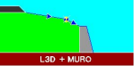
2D Çizgi + Şev 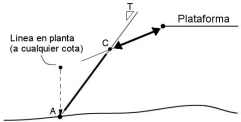Yatayda bir çizgiden başlayarak, arazideki kesişim noktası A hesaplanır ve bir T şevi yükseltilir. Daha sonra, terasman kenarı B'den başlayarak bahsedilen T şeviyle kesişene kadar uygulanan, baştan sabit ve her zaman parametrik olarak tanımlanmış bir dolgu tanımlanır. Ayrıca, dolgu şev dibi ile şev arasına yerleştirilen bir palye (dX,dY) de eklenebilir. Veya dolgu şevleri yoksa (ZT1=0) duvarın dibine. Bu modda dolgu yükseklikleri sıfırlanırsa: ZT1=ZT2=ZT3=0; o zaman 2D çizgisinin araziyle kesişiminden atılan şev, dolgu başlığından inşa edilmiş bir duvarı aramaya gider. 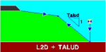
3D Çizgi, zemine ulaşmak istenmiyorsa çizginin kotunda bitirmeye olanak tanır. (Eylül 2020'den önceki sürümlerde, bu modlar çizgi noktalarının kotunu .vol dosyasına kaydetmiyordu ve 0 kotuyla yükleniyordu.) Şev tablosu 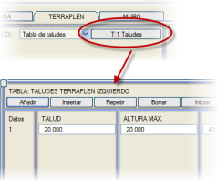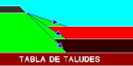Şev tablosu seçeneğinin yanında [Ş:n Şevler] düğmesi bulunur. Bu tuşa basıldığında, vektörleri tanımlamaya benzer, ancak ŞEV ve MAKSİMUM YÜKSEKLİK sütunları olan bir menü açılır. Hesaplamada, program tablodaki ilk şevle denemeye başlar. Eğer öngörülen maksimum yükseklikten daha düşük bir yükseklikle araziye ulaşmazsa, o zaman program tablodaki bir sonraki veriyle dener, eğer bununla öngörülen maksimum yüksekliğiyle araziye ulaşmazsa, bir sonraki veriye atlar ve bu şekilde devam eder. Eğer tablodaki verilerden hiçbiriyle araziye ulaşılamazsa, o zaman dikey bir şev (veya tanımlanmışsa bir duvar) yerleştirilir. 3D çizgiye göre duvar yüksekliği 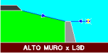Bu durumda, 3D çizgisinin kotu duvarın tepesinin kotunu işaretler, ardından duvarın tepesi ve/veya tanımlanmış olan parametrik dolgu kesiti ile devam edilir. Eğer 3D çizgi duvarın tepesini arazinin üzerine çıkarırsa, kesit, dolgu kesitinde tanımlanan ilk şevle araziye karşı kapatılır. Bu tür duvarlar, uygun yükseklikteki duvarı otomatik olarak arayan duvar tanım menülerinin Otomatik seçeneğiyle uyumludur. Duvarın tepesini tanımlamak için Duvar sekmesinin AMT ve ZMT değerleri de kullanılabilir (örneğin, ZMT = 0 ve AMT < 0, dolguyu duvarın bir kısmını kaplayacak şekilde oturtmak için). 2D Çizgi + Duvar + Şev 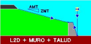2D çizgi, duvarın ayağını (veya dolgu ayağını) işaretler ve taç şevi, duvarın tepesi için tanımlanan AMT/ZMT ilişkisini korur. Duvarın yüksekliği, platformdan inen AMT/ZMT şevinin duvarla kesişimi ile belirlenir. Duvarın genişliği, derinliği, şevi ve arka yüzü olabilir. Eğer şev 2D çizgisinden önce araziyi keserse, duvar yerleştirilmez ve şev 2D çizgisine götürülür. Bu seçenek, duvarın otomatik seçimiyle uyumludur. 3D Çizgi, zemine ulaşmak istenmiyorsa çizginin kotunda bitirmeye olanak tanır. (Eylül 2020'den önceki sürümlerde, bu modlar çizgi noktalarının kotunu .vol dosyasına kaydetmiyordu ve 0 kotuyla yükleniyordu.) 3D Çizgi + Duvar + Şev 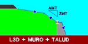Bu durumda 3D çizgi, bu noktadan aşağıya (araziye doğru) atanmış geometrisiyle inşa edilen duvarın tepesini işaretler. 3D çizgiden (duvarın tepesi), duvar için tanımlanan AMT/ZMT şeviyle bir çizgi çizilir. Platformdan, önceki çizgiyi kesene kadar parametrik olarak tanımlanan dolgu şevleri çizilir. 2D Çizgi + Duvar Bu durumda 2D çizgi, duvarın ayağının konumunu sabitler. Duvarın yüksekliği, duvarın tepesini aramaya inen baştan sabit parametrik dolgunun kesişimi ile belirlenir. Kesişim olmaması durumunda, eğer dolgu 2D çizgisinin konumundan önce araziyi keserse, dolgu yapılır. Aksi takdirde, platforma bitişik bir duvar yapılır. Duvar için bir yükseklik sabitlenirse, bu değer maksimum yükseklik olarak alınır. Eğer dolgu kesişimi maksimum yüksekliği aşarsa, o zaman duvar bu yükseklikle sabitlenir ve dolgu şevi zorlanır. Eğer çizgi platformun altındaysa, duvar terasmana kadar, üst yüzü platformun deveriyle (AMT < 0, ZMT = -1000 kullanmaya benzer şekilde) inşa edilir. Alternatif TK kutucuğunda alternatif bir tip kesit belirtilebilir. Eğer dolgu şev kısmı öngörülen yüksekliği aşarsa, program otomatik olarak bu alternatif kesite atlar. 3D Çizgi, zemine ulaşmak istenmiyorsa çizginin kotunda bitirmeye olanak tanır. (Eylül 2020'den önceki sürümlerde, bu modlar çizgi noktalarının kotunu .vol dosyasına kaydetmiyordu ve 0 kotuyla yükleniyordu.) Tabloya göre duvar yüksekliği Bu seçenek, yarmadaki benzerine benzer. 2D Çizgi + Tabloya göre duvar yüksekliği 2D çizgi, duvarın ayağının arazi üzerindeki konumunu sabitler. Duvar tepesi kotları tablosu, duvarın yüksekliğini sabitler. Duvarın geometrisi sabit veya yüksekliğe bağlı bir duvar tablosuyla tanımlanabilir. Dolgu şevi, platformun kenarından duvarın tepesine kadar değişkendir. 3D Çizgi, zemine ulaşmak istenmiyorsa çizginin kotunda bitirmeye olanak tanır. (Eylül 2020'den önceki sürümlerde, bu modlar çizgi noktalarının kotunu .vol dosyasına kaydetmiyordu ve 0 kotuyla yükleniyordu.) 3D Çizgi + Palyeler Bu mod, hendek sonundan 3D çizgisine kadar olan şevi aşağıdaki geometriye sahip banketlerle değiştirmeye olanak tanır:
Ş1 şevi ile, palyeler ABT genişliğine ulaşana kadar banketler inşa edilir. O andan itibaren palyeler ABT genişliğinde korunur ve banketlerin şevi artırılır. [ ] Sabit genişlikli palyeler seçeneği etkinleştirilirse, iki parametre daha eklenir:
2D Çizgi+duvar+Hendek 3D Çizgi, zemine ulaşmak istenmiyorsa çizginin kotunda bitirmeye olanak tanır. (Eylül 2020'den önceki sürümlerde, bu modlar çizgi noktalarının kotunu .vol dosyasına kaydetmiyordu ve 0 kotuyla yükleniyordu.) 2DÇizgi+Şev+Duvar(Ymaks) 3D Çizgi, zemine ulaşmak istenmiyorsa çizginin kotunda bitirmeye olanak tanır. (Eylül 2020'den önceki sürümlerde, bu modlar çizgi noktalarının kotunu .vol dosyasına kaydetmiyordu ve 0 kotuyla yükleniyordu.) Eğer Duvar tanımında [Yükseklik/Kot/D.Y. Z] seçicisi [Kot] olarak değiştirilirse, o zaman tanımlanan kot değeri kullanılacaktır. 3D Çizgi + Palyeler Şevlerin Deverlenmesi Bu tür şev oluşturma, bazı karayolu yönetmeliklerinde (Peru, Paraguay,...) kullanılır. Aşağıdaki parametrelerle tanımlanır:
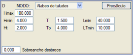
Şev+2DÇizgi+Şev Platformdan, parametrik dolgu şevleri ve palyeleri çizginin konumuna kadar indirilir ve bu noktadan itibaren tanımlanan diğer şevle araziye kadar devam edilir. Eğer çizgi platform kenarından önceyse, her şey bu şevle yapılır. Eğer enkesit çizgiyi kesmezse veya çizgi parametrik dolgu şev dibinin ötesindeyse, her şey parametrik şevlerle yapılır. Duvar+Döşeme Bu seçenek, yarmadaki benzerine benzer. |